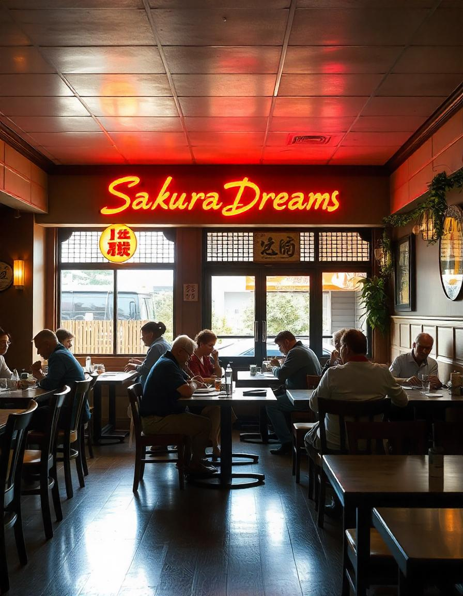
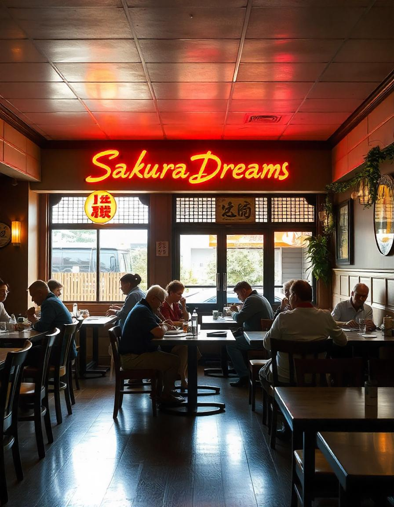

"En Sakura Dreams, nuestra misión es crear una experiencia gastronómica inolvidable que celebre el arte y la tradición de la cocina japonesa.
Estamos comprometidos a utilizar los ingredientes más frescos y de mayor calidad para elaborar platos que honren el delicado equilibrio entre sabor,
textura y presentación. A través de un servicio excepcional, una atmósfera cálida y acogedora y un profundo respeto por la cultura japonesa,
pretendemos transportar a nuestros huéspedes a un mundo de maravillas culinarias y serenidad".
"Nuestra visión es convertirnos en un faro de excelencia culinaria japonesa, donde cada comida sea un viaje a través de las estaciones y tradiciones de Japón.
Aspiramos a inspirar una apreciación más profunda de la cultura japonesa, no sólo a través de nuestra comida sino también a través de la armonía y la belleza de nuestro ambiente gastronómico.
Sakura Dreams será un lugar donde los huéspedes podrán escapar de lo común y disfrutar de una experiencia de ensueño que nutre el alma tanto como el paladar".
 
